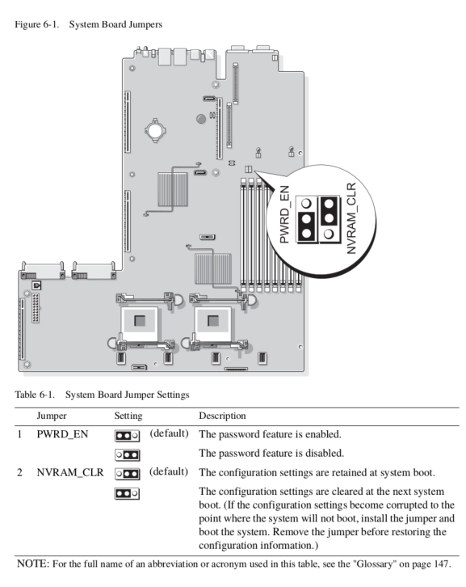

Using Graphics Cards
The Poweredge 1950 was produced in an era before GPGPU computing was in vogue and was not built with high-power use PCIe devices in mind. However, with enough work GPUs can be used
PCIe Slots Available
The Poweredge 1950 can be equipped with either two PCI-X risers, or two PCIe 2.0 8x risers. Note that these cannot be mixed and matched, it must be either two PCI-X risers, or two PCIe risers.
Since there are a very limited number of PCI-X graphics cards available, none of which are any good, for GPU use the two PCIe risers will are almost always used.
Caveats
The PCIe 2.0 standard dictates that PCIe slots should provide 25 watts of power to standard devices and up to 75 watts to devices identified as "high power" such as graphics cards. However, it seems that the 8x PCIe slots do not comply with this part of the standard and will only supply up to 25 watts to any device.
Using a Graphics Card as a VGA Device
In order to use graphics cards as VGA devices, which is required for graphics output and OpenCL/CUDA device use, the iDRAC remote management card will need to be removed. In general the system will boot just fine with the iDRAC in place, but any attached graphics cards will not show up as valid VGA devices on boot. By removing the iDRAC and resetting the BIOS graphics cards can be used as VGA devices, as per usual.
Using Graphics Cards that Require <= 25 Watts
Graphics cards that draw less than 25 watts will, generally not run afoul of power draw issues. However not every card will be recognized by the BIOS, and there doesn't appear to be any way to tell a prior which cards will work.
Using Graphics Cards that Require > 25 Watts
Any card that is rated at > 75 watt power usage will generally cause a POST failure with an PCIe riser error, assuming only power from the PCIe slot is used. However, if 12 volt power is supplied from an external source the card will usually work as intended. As a word of caution a power supplied to the card should always use the same ground reference. That is, using the 12 volt power from the PCIe rail and auxiliary power from an external power supply is not recommended. Power should either be supplied from the 12 volt sources available on the main board ( or the two power supplies ) or entirely from an external power supplies, as is the case when using a PCIe extender and external power supply.
Using an External Power Supply
Using an Internal Power Supply
Resetting the BIOS
Any time the iDRAC card is removed from or added to the system the BIOS will need
to be reset or the system will hang on POST. The order to reset the BIOS the
NVRAM_CLR jumper will need to be set to the "clear" position and the system will
need to be boot cycled.
A page from the maintenance manual for setting the NVRAM_CLR jumper is shown below.

List of Graphics Cards Known to Work
- PNY GeForce GT 720 1GB DDR3
- Sapphire Nitro Radeon R7 360
List of Graphics Cards Known NOT to Work
- Nvidia GeForce GTX 750 Ti